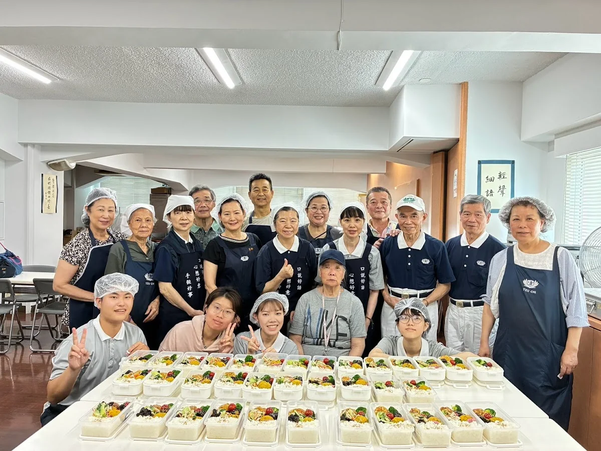

查看內容臺灣・職場實習
查看內容臺灣・職場實習職場實習
實習準備官方來源
查看內容臺灣・職場實習 查看內容馬來西亞・海外實習
查看內容馬來西亞・海外實習 示意照片查看內容美國・海外實習
示意照片查看內容美國・海外實習 查看內容英國・暑期學習
查看內容英國・暑期學習 查看內容日本・海外實習
查看內容日本・海外實習 查看內容國際學術連結・系上國際學術交流
查看內容國際學術連結・系上國際學術交流標示年度的甄選公告為歷年資料；目前名額、申請時間與條件，請向系辦確認。
此分類目前沒有符合的資料。
從參與者提供的紀錄，看見日本慈濟的行政、語言與服務工作。
打開實習紀錄收合實習紀錄+
在非營利組織中，參與行政、日文翻譯與社區服務。
本次東京實習的平日作息，工作隨服務活動調整。
從收據、字幕到活動支援，每一天都在練習細心與合作。
分類登錄收據、清點硬幣、準備郵件、整理檔案與製作簡報。
整理證嚴上人開示逐字稿、翻譯日文與製作字幕，也將訪談內容做成海報。
茶道、御守製作、防災與健康活動，讓學習延伸到辦公室之外。
找不到符合的文件。
東京實習專題依據參與者提供的 2026 年實習日誌與簡報整理，活動與作息為該次實習經驗。照片採用參與者紀錄及系所發布的備餐照片，本頁未公開個人日誌全文。實習準備資訊依據系所官方實習資料整理。
系所官方學生實習專區閱讀系所代代木服務報導經營管理學系學生實習辦法經營管理學系學生實習作業要點